Електричен заряд
Още древногръцкият философ Талес (640-546 г. пр. н.е.) описва как къс от кехлибар след натриване придобива свойството да привлича леки предмети сламки или перушинки. Терминът електричество произхожда от гръцката дума “електрон”, която означава кехлибар.
Ако при сух въздух натрием в косата си гребен, след това той започва да привлича леки късчета хартия (Фиг. \ref{fig:44.1}). След като се натрие с парче от вълнен плат, надут празничен балон се привлича и прилепва към стената или тавана на стаята. Подобни прости опити демонстрират наличието на електрични сили и електрични заряди. Електричният заряд е фундаментална физична величина, която характеризира вътрешно присъщо свойство на електроните, протоните и други микрочастици. Единицата за електричен заряд се нарича кулон (C). Съществуват два вида електрични заряди, които условно са наречени положителни и отрицателни. Едноименните заряди се отблъскват, а разноименните се привличат.
Елементарният електричен заряд е
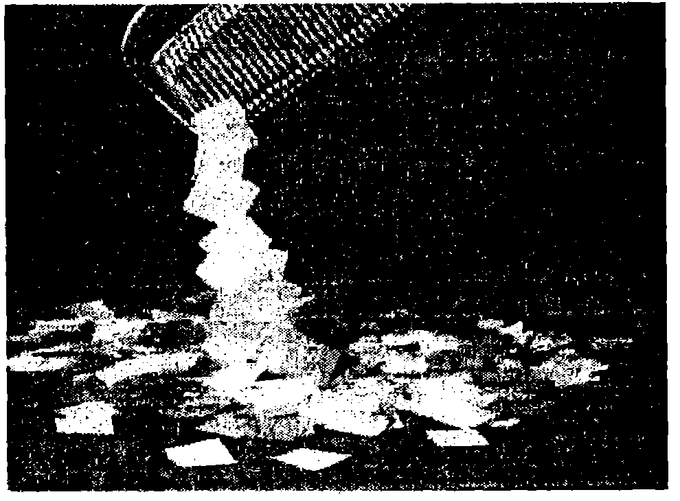
След натриване в косата или в дрехите пластмасовият гребен привлича леки късчета хартия.
`Фиг. 44.1`
Носители на елементарен отрицателен заряд са електроните, а протоните — на елементарен положителен заряд . Зарядът на макроскопичните тела е алгебрична сума от зарядите на съдържащите се в тях протони (в атомните ядра) и електрони (в електронните обвивки на атомите). Тъй като този брой е еднакъв, при нормални условия повечето тела са електронеутрални.
Закон за запазване на електричния заряд
Да натрием стъклена пръчка с парче кожа. От пръчката се откъсват електрони и преминават в кожата. В резултат на това пръчката се наелектризира положително, което означава, че броят на протоните в нея е по-голям от броя на електроните. След като получи допълнителни електрони от пръчката, кожата се наелектризира отрицателно. Пръчката и кожата са пример за електрически изолирана система, т.е. система, която не обменя заредени частици с околната среда. Отначало двете тела са електронеутрални: общият заряд на всички протони е равен по големина на общия заряд на всички електрони. Следователно пълният заряд на системата, който е равен на алгебричната сума от положителните и отрицателните заряди, е нула. При наелектризирането не се създават нови заряди, а става само преразпределение на вече съществуващите заряди (електрони). Затова пълният заряд на системата пръчка кожа не се променя и остава равен на нула.
Експериментално е установено, че в природата съществува закон за запазване на електричния заряд, който може да се формулира така:
Пълният заряд (алгебричната сума от положителните и отрицателните заряди) в електрически изолирана система не се изменя, независимо от това какви процеси се извършват вътре в системата.
Това е основен физичен закон, който е в сила както при наелектризирането на макроскопичните тела, така и в света на микрочастиците. Например неутрон, който не е свързан в ядро, е нестабилна частица, която се разпада на протон, електрон и една електронеутрална частица, наречена антинеутрино. Не е трудно да съобразим, че при този процес също се изпълнява законът за запазване на заряда. Действително, зарядът на неутрона е нула. Алгебричната сума от зарядите на трите частици, получени след разпадането, също е нула: . Следователно пълният заряд не се променя.
Закон на Кулон
Опитът показва, че електричните сили на взаимодействие между наелектризираните тела зависят от техните размери и форма, т.е. от това как са разпределени зарядите в обема и по повърхността на телата. Когато обаче размерите на едно тяло са много малки в сравнение с разстоянията до другите наелектризирани тела, електричната сила вече не зависи от големината и формата на тялото. В този случай можем да приемем, че целият електричен заряд на тялото е съсредоточен в една единствена геометрична точка, т.е. да разглеждаме тялото като точков заряд.
През 1785 г. френският физик Шарл Кулон (1736-1806) обобщава резултатите от проведените от него експериментални изследвания и формулира основния закон за електростатичното взаимодействие (закон на Кулон):
Два неподвижни точкови заряда си взаимодействат със сила, чиято големина е правопропорционална на произведението от големините на зарядите и обратнопропорционална на квадрата на разстоянието между тях
където и са големините на зарядите, а е разстоянието между тях (Фиг. \ref{fig:44.2}).

`Фиг. 44.2`
Коефициентът на пропорционалност зависи от избора на измерителните единици. В SI, където силата се измерва в нютони (N), разстоянието в метри (m), а зарядът в кулони (C), константата има стойност .
Често вместо се използва друга константа , наречена електрична константа. Двете константи са свързани със съотношението Съгласно с препоръките на Международния комитет по константите за науката и технологиите (1986 г.) стойността на електричната константа се приема за равна точно на Чрез електричната константа законът на Кулон се записва във вида
Електрична сила, която се изразява с формула \eqref{eq:44.2}, се нарича кулонова сила. Кулоновите сили са централни и са насочени по правата, съединяваща двата заряда (Фиг. \ref{fig:44.2}). Съгласно с третия принцип на механиката зарядите взаимодействат с равни по големина и противоположни по посока сили. Това са сили на привличане, когато зарядите са разноименни (Фиг. \ref{fig:44.2}а), или на отблъскване за заряди с еднакъв знак (Фиг. \ref{fig:44.2}б).
Кулоновата сила , с която зарядът действа на заряда , може да се запише във векторен вид
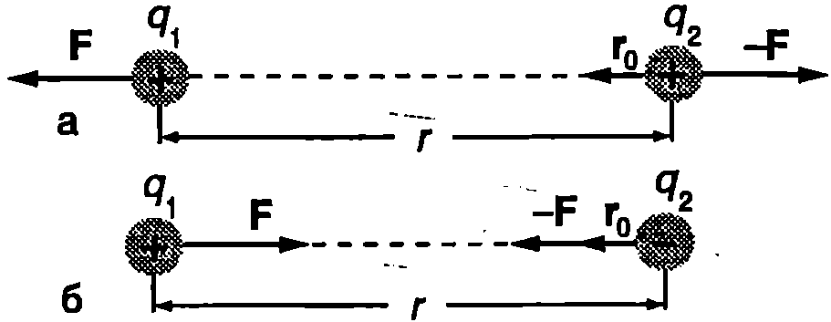
`Фиг. 44.3`
където е единичен вектор, насочен от заряда към заряда (Фиг. \ref{fig:44.3}). Ще обърнем внимание, че формула \eqref{eq:44.3} отчита знаците на зарядите. За едноименни заряди и векторите и са еднопосочни (Фиг. \ref{fig:44.3}а), а при (разноименни заряди) посоките на и са противоположни (Фиг. \ref{fig:44.3}б). Формули \eqref{eq:44.1} и \eqref{eq:44.2} за големината на кулоновата сила не отчитат знака на зарядите.
Пример 44.1
Средното разстояние между електрона и протона в атома на водорода е . Пресметнете и сравнете силите на електрично и на гравитационно взаимодействие между двете частици. \end{psexample}
Решение
Големината на електричната сила определяме от закона на Кулон: Гравитационната сила определяме от закона на Нютон за гравитацията, като използваме данните от табл. С.1 (част 1, стр. 238): Отношението на големините на двете сили е . Следователно електричното взаимодействие между електрона и протона е пъти по-силно от гравитационното. Затова при изучаване на движението и взаимодействието на заредени микрочастици гравитационните сили не се отчитат.
Принцип на суперпозицията
Променя ли се силата на взаимодействие между два заряда, ако близо до тях се разположи трети заряд? Отговор на този въпрос се получава от опита:
Силата на взаимодействие между два точкови заряда не зависи от това дали те са подложени или не са подложени на въздействието на други заряди.
Това твърдение разкрива физичното съдържание на т.нар. принцип на суперпозицията. Електричната сила, с която взаимодействат два точкови заряда, винаги се определя по закона на Кулон - независимо дали зарядите са сами или са заобиколени от други заряди. Принципът на суперпозицията позволява да се замени едновременното действие на няколко електрични сили с тяхната равнодействаща и да се прилагат познатите от механиката правила за събиране на сили (суперпозиция означава наслагване, събиране по определени правила). Например, ако точков заряд е заобиколен от на брой други точкови заряди, които му действат съответно със сили (всяка от тях се определя по закона на Кулон), резултантната сила, действаща на заряда, е
Електрично поле
Английският физик Майкъл Фарадей (1791-1867) пръв стига до извода, че електричните заряди взаимодействат посредством създадените от тях полета. Всеки заряд е източник на електрично поле, което изпълва цялото пространство и му придава нови свойства. Тези нови свойства в частност се изразяват в това, че на всеки друг заряд, поставен в електрично поле, действа сила. Полето, създадено от неподвижни заряди, се нарича електростатично поле. На Фиг. \ref{fig:44.4} е показано топче с малък положителен заряд , поставено в точка на електричното поле, създадено от метална сфера с положителен заряд . Полето действа на заряда с електрична сила . Отношението на силата към големината на заряда до се нарича интензитет на електричното поле в точка :
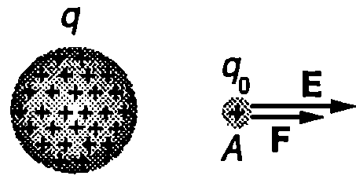
`Фиг. 44.4`
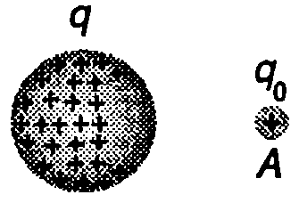
`Фиг. 44.5`
Подобно на силата, интензитетът на електричното поле е векторна физична величина. Посоката на интензитета на електричното поле в дадена точка от пространството съвпада с посоката на силата , с която полето действа на малък положителен точков заряд поставен в тази точка.
Единицата за интензитет се получава от формула \eqref{eq:44.5}. В SI, където силата се измерва в нютони (N), а зарядът в кулони (C), единицата за интензитет е нютон на кулон (N/C).
Малкият положителен точков заряд с помощта на който се установява наличието на електрично поле, се нарича пробен заряд. Защо поставяме изискването пробният заряд да е малък? На Фиг. \ref{fig:44.5} е показан един от случаите, когато това условие не е изпълнено. Наличието на голям заряд в точка води до преразпределение на зарядите върху наелектризираната метална сфера и полето се променя. Затова пробният заряд трябва да е толкова малък в сравнение със заряда на сферата, че след поставянето му в точка разпределението на зарядите върху сферата и полето, което те създават, да не се изменят.
Интензитетът е силова характеристика на електричното поле. Ако знаем интензитета на полето в дадена точка, можем да определим силата , която ще действа на заряд , поставен в тази точка, по формулата
Посоката на силата зависи от знака на заряда . За положителен, заряд () силата е насочена по посока на интензитета . На отрицателен заряд () полето действа със сила, която противоположна посока на интензитета .
Електрично поле на точков заряд
Заместваме силата (за и ) от закона на Кулон \eqref{eq:44.3} в и определяме интензитета на полето, създадено от точков заряд (Фиг. \ref{fig:44.6}):

`Фиг. 44.6`
Следователно интензитетът на електричното поле на точков заряд намалява обратнопропорционално на квадрата на разстоянието до заряда.
Интензитетът на електричното поле, което създава система от на брой точкови заряди в произволна точка от пространството, се определя с помощта на принципа на суперпозицията. Резултантната сила, действаща на пробния заряд, е векторна сума от силите, с които му действат отделните заряди, и се изразява с формула \eqref{eq:44.4}. Съгласно с уравнение \eqref{eq:44.5} интензитетът на електричното поле в точка е
Следователно интензитетът на електричното поле на система от точкови заряди е векторна сума от интензитетите на полетата на отделните заряди.
Принципът на суперпозицията дава възможност да се пресметне интензитетът на електричното поле и в случая, когато зарядите не са точкови. Зареденото тяло се разделя мислено на много голям брой малки части, които се разглеждат като точкови заряди. Определят се интензитетите на техните полета и се сумират векторно. При непрекъснато разпределение на заряда сумата \eqref{eq:44.8} преминава в интеграл.
Пример 44.2
На Фиг. \ref{fig:44.7} са показани три точкови заряда: , , (). Определете интензитета на електричното поле в точка . \end{psexample}
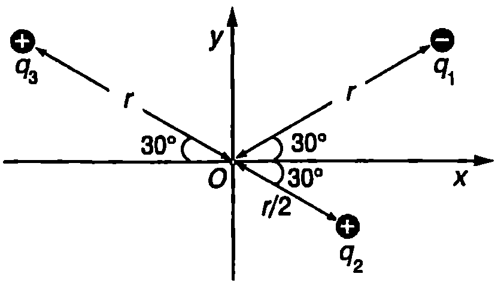
`Фиг. 44.7`
Решение
Векторите на интензитетите , , на електричните полета, които създават в точка съответно зарядите , и , са показани на Фиг. \ref{fig:44.7}. Техните модули са: [E_1 = \frac{1}{4\pi\varepsilon_0} \cdot \frac{2q}{r^2}; \quad E_2 = \frac{1}{4\pi\varepsilon_0} \cdot \frac{q}{(r/2)^2} = 2E_1; \quad E_3 = E_1.] Интензитетът на полето в точка е .
Геометричното събиране на трите вектора се илюстрира от Фиг. \ref{fig:44.7}. Векторът е насочен по оста . Неговият модул е:
Пример 44.3
Върху тънък пръстен с радиус е разпределен равномерно положителен заряд . Определете интензитета на електричното поле в точка , разположена на разстояние над центъра на пръстена. \end{psexample}
Решение
Разделяме мислено окръжността на малки елементи с еднаква дължина . Всеки елемент се разглежда като точков заряд с големина: където е дължината на окръжността. На Фиг. \ref{fig:44.9} е показан интензитетът на полето на един от точковите заряди. Неговата големина е: където (Фиг. \ref{fig:44.9}).
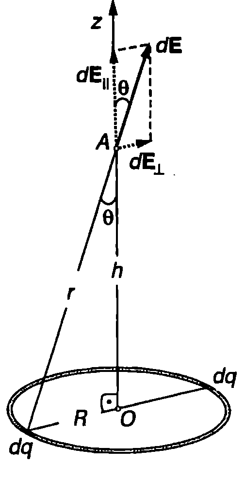
`Фиг. 44.9`
Разлагаме вектора на две компоненти: едната успоредна (), а другата перпендикулярна () на оста на симетрия на пръстена (Фиг. \ref{fig:44.9}): От симетрията следва, че перпендикулярните на оста компоненти за два елемента, разположени симетрично спрямо центъра на пръстена, са равни по големина и противоположни по посока: тяхната векторна сума е нула. Тъй като всички малки елементи, на които сме разделили пръстена, могат да се групират в подобни двойки, стигаме до извода, че електричното поле на пръстена в точка няма перпендикулярна на оста компонента, т.е. интензитетът на полето в точка е насочен по оста . Големината му е равна на сумата от големините: където (от правоъгълния триъгълник на Фиг. \ref{fig:44.9}).
Заместваме и в уравнението за и получаваме: Интензитетът на полето на целия пръстен в точка е:
Когато разстоянието е много по-голямо от радиуса на пръстена, членът във формулата за се пренебрегва, и тя получава вида: т.е. на големи разстояния от пръстена разположените върху него заряди създават поле на точков заряд.
Силови линии
За нагледно представяне на електрично то поле се използват силови линии, подобни на токовите линии в хидродинамиката, чрез които се представя полето на скоростта на флуидите. Силовите линии са математически линии, които показват посоката на интензитета на полето: във всяка точка от полето векторът е насочен по допирателната към силовата линия, преминаваща през тази точка (Фиг. \ref{fig:44.10}).
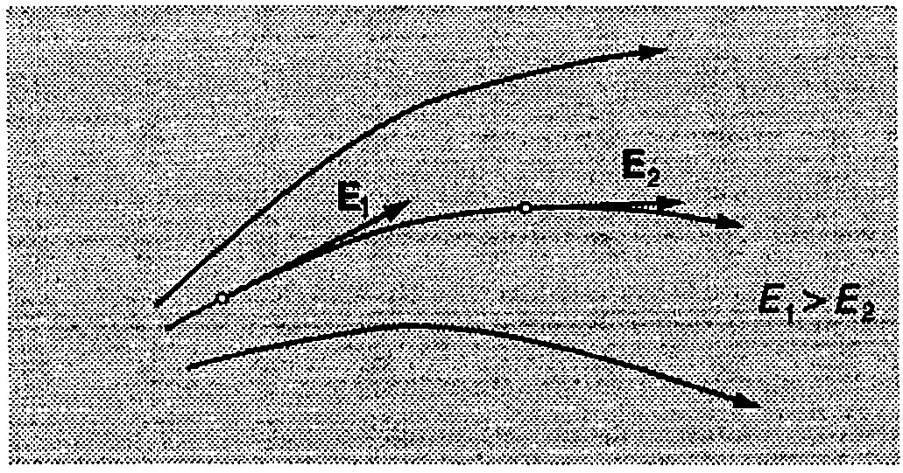
Силови линии на електростатично поле.
`Фиг. 44.10`
При начертаване на силовите линии на електростатичното поле се отчита следното:
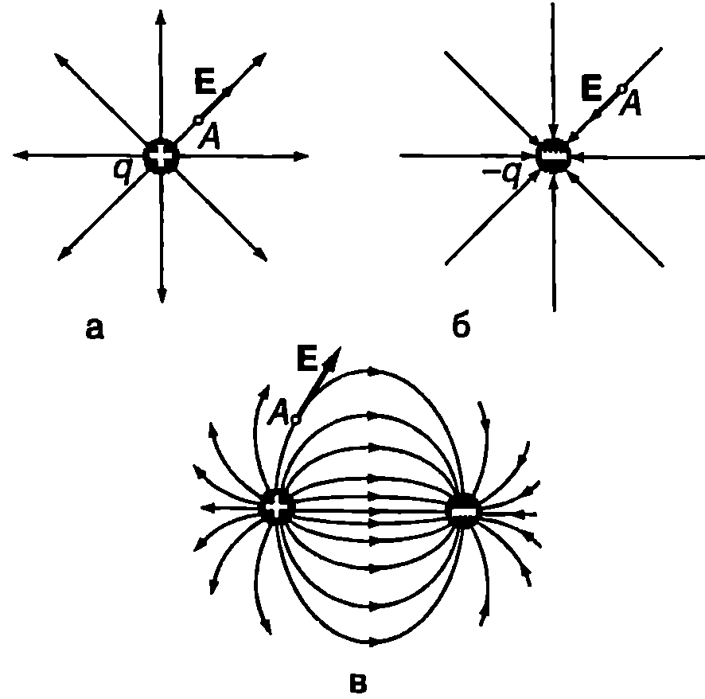
Електростатично поле на: а) положителен точков заряд; б) отрицателен точков заряд; в) два равни по големина и противоположни по знак точкови заряда.
`Фиг. 44.11`
-
Силовите линии започват от положителните заряди и завършват в отрицателните заряди или се отдалечават в безкрайност (Фиг. \ref{fig:44.11}). Те не могат да са затворени криви, да се пресичат една с друга или да прекъсват в точки, където няма заряди.
-
Броят на силовите линии, излизащи от положителен заряд или завършващи в отрицателен заряд, е правопропорционален на големината на съответния заряд.
-
За нагледност силовите линии се чертаят така, че тяхната гъстота (брой силови линии, които пресичат повърхност с единица площ, разположена перпендикулярно на силовите линии) да е пропорционална на големината на интензитета. В областите със силно поле силовите линии се чертаят по-нагъсто, а там, където полето е слабо, те се раздалечават (Фиг. \ref{fig:44.10}).
Електрично поле, чийто интензитет има еднаква големина и посока във всички точки от полето, се нарича еднородно (хомогенно) поле. Неговите силови линии са успоредни прави линии, разположени на еднакви разстояния една от друга. Например приблизително еднородно в полето между две успоредни метални пластинки, които са заредени с равни по големина и противоположни по знак електрични заряди и са разположени близо една до друга (Фиг. \ref{fig:44.12}).
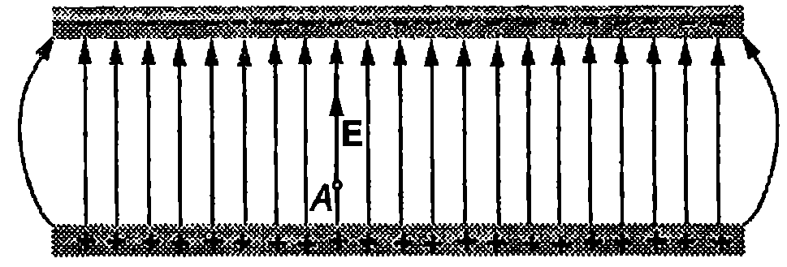
Еднородно електростатично поле.
`Фиг. 44.12`
Мастиленоструен принтер

Принцип на действие на мастиленоструен принтер. Входният сигнал от компютъра контролира големината на електричния заряд на всяка капка мастило и по този начин определя мястото върху хартията, на което ще попадне капката.
`Фиг. 44.13`
Фиг. \ref{fig:44.13} илюстрира едно от съвременните приложения на електростатичните полета в мастиленоструйните принтери. При този вид принтери всяка буква върху хартията се очертава от около 100 малки капки мастило. Капките се създават в генератора на капки, след което преминават през специална камера, в която получават отрицателен електричен заряд . Големината на заряда на всяка отделна капка се контролира от електричен сигнал, постъпващ от компютъра, и носещ информация за текста, който трябва да се отпечата. След това капките преминават между две успоредни метални пластинки, заредени с равни по големина и противоположни по знак електрични заряди, които създават еднородно електрично поле с интензитет . На капките действа електрична сила която ги отклонява към пластинката положителен заряд. Електричното поле се поддържа постоянно, а отклонението на всяка капка зависи от големината на нейния заряд. По този начин мястото, на което ще попадне капката върху хартията, се определя от нейния електричен заряд: различните капки попадат на различно място и оформят букви.
Задачи
-
Как ще се измени силата на взаимодействие между два точкови заряда, ако разстоянието между зарядите: а) се увеличи 2 пъти; б) се намали 3 пъти?
-
Пресметнете силата на привличане между два разноименни точкови заряда с големина които се намират на разстояние m един от друг. Сравнете тази сила със силата на тежестта , действаща на слон с маса kg. Приемете земното ускорение за
-
Колко електрона трябва да се отнемат от метално топче, за да се зареди с положителен заряд ?
-
Два точкови заряда се привличат със сила 1 N. Как трябва да се измени разстоянието между зарядите, за да стане силата 16 N?
-
Две малки топчета, заредени с едноименни заряди с еднаква големина, са свързани с тънка диелектрична нишка с дължина 0,1 m. Нишката може да издържи максимална сила на опъване 0,9 N. При какъв заряд на топчетата нишката ще се скъса?
-
През 1909 г. американският физик Миликен за пръв път определя заряда на електрона. Той измерва интензитета на електричното поле, което трябва да се приложи, за да се задържи заредена микроскопична капка масло в равновесие във въздуха. Нека зарядът на капка с маса се дължи на два некомпенсирани електрона. Определете заряда на електрона, ако капката е в равновесие при интензитет на електричното поле Земното ускорение е
-
Всички експериментални данни показват, че зарядът на електрона е точно равен по големина на заряда на протона и затова атомите и молекулите са електронеутрални. Да допуснем обаче, че зарядът на електрона е само с 0,0001% по-голям от заряда на протона. С каква електрична сила биха се отблъсквали в такъв случай две еднакви медни топчета, всяко с маса m = 1 9, разположени на разстояние m едно от друго? Медта има атомен номер и моларна маса g/mol.
-
Определете големината и посоката на интензитета на електростатичното поле в точка от Фиг. \ref{fig:44.14}.
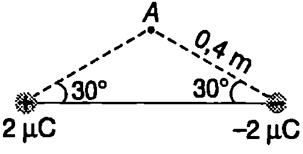
`Фиг. 44.14`
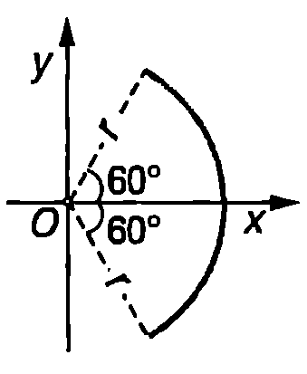
`Фиг. 44.15`
9. Тънка еластична пръчка е равномерно заредена с положителен електричен заряд и е огъната в дъга от окръжност с радиус (Фиг. \ref{fig:44.15}). Определете големината и посоката на интензитета на електростатичното поле в точка .
- Върху диск с радиус е разпределен равномерно заряд . Определете интензитета на електричното поле в точка , разположена на разстояние над центъра на диска.
Указание. Разделете диска на голям брой тънки пръстени. Използвайте резултата от пример 44.3, за да определите интензитета на полето, което създава пръстен с радиус и дебелина .